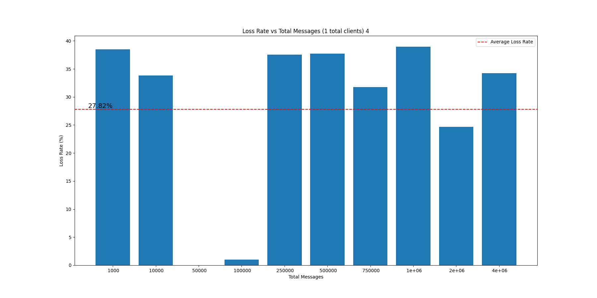
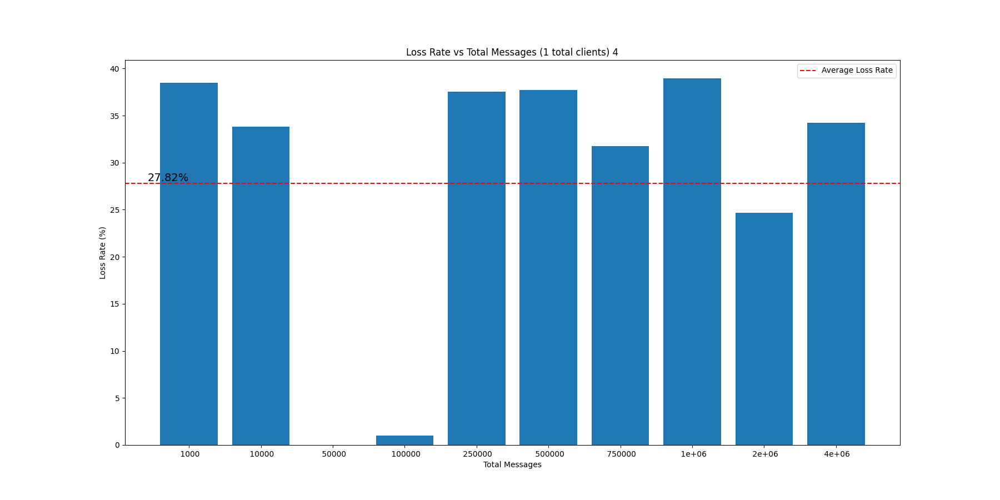

1. Introdução
Este relatório tem como objetivo apresentar o trabalho realizado na disciplina de Redes II, ministrada pelo professor Elias P. Duarte Jr., no semestre 2022/2.
O trabalho consiste em implementar um canhão UDP com o intuito de medir a taxa aproximada
de perda de pacote em uma rede, além de verificar se mensagens são entregues fora de ordem.
2. Implementação
O trabalho foi implementado em C++ e consiste em bibliotecas para o cliente, servidor e o tipo de mensagem sendo transmitida, além de duas mains, uma para o cliente e outra para o servidor, que utilizam a API de sockets do C++ para comunicar datagramas UDP.
2.1. Mensagem
A mensagem é uma struct composta por um ID de mensagem, um ID de cliente (que é basicamente o PID do processo enviando aquele datagrama) e uma string de 100 caracteres:
As mensagens são enviadas em um datagrama UDP via função sendto e recebidas pela função recvfrom da API de sockets do C++.
2.2. Cliente
O cliente é composto por um gerenciador responsável por controlar uma série de clientes filhos, gerados via fork, que são responsáveis por enviar mensagens para o servidor. Cada filho envia o mesmo número de mensagens ao servidor, com IDs de mensagem sequenciais - de 1 até o número máximo enviado por cada um -, de maneira concorrente.
Cada fork é dado por uma estrutura constituida por um descritor de socket por onde realizar
a comunicação com o servidor, o endereço do servidor, uma entendidade de host,
uma string que representa o nome do servidor e uma main responsável pela comunicação:

Ao passo que o gerenciador é uma main própria responsável por gerar os filhos e imprimir os relatórios após todos os filhos terminarem de rodar.
2.3. Servidor
O servidor é um servidor UDP comum que recebe mensagens da forma apresentada acima, trata essas mensagens, responde cada uma e, após um timeout de 5 segundos, imprime os relatórios de mensagens recebidas, perdidas e fora de ordem.
A estrutura do servidor é dada por um descritor de socket, um buffer para a mensagem
recebida, o endereço do servidor, o endereço do cliente, uma entidade de host, uma string
que representa o nome do servidor, um booleano que indica se o servidor deve imprimir
mensagens na tela, o total de clientes conversando, o total de mensagens esperadas, o total
de mensagens perdidas e o total de mensagens fora de ordem. Além disso, também
possui uma esturtura que representa as informações das mensagens para tratamento
e produção de relatórios e um booleano que indica que o alarme do timeout foi disparado:


2.4. Comunicação
Inicialmente, o gerenciador e o servidor realizam um handshake no qual a quantidade de
clientes a serem abertos e a quantidade de mensagens por cliente são enviadas ao servidor.
Após, o gerente faz o fork de todos os clientes que iniciam comunicação com o servidor
imediamente.
Cada cliente envia X mensagens para o servidor com um ID de mensagem sequencial,
incrementado um a um. O servidor recebe as mensagens, trata e responde cada uma. Os clientes,
contudo, não esperam as respostas do servidor para enviar a próxima mensagem. Portanto, a
resposta que o servidor realiza é apenas para simular o load de uma comunicação real, além
dos processamentos já feitos.
Quando todos os clientes terminam de enviar suas mensagens, o servidor finaliza o
loop de escuta após um timeout de 5 segundos. Em seguida, imprime os relatórios e
escreve os arquivos utilizados para tratamentos finais e geração de gráficos.
No mais, as mensagens são enviadas utilizando sendTo e recebidas utilizando recvFrom,
como o objetivo é medir a taxa de perda de pacotes, não há reenvio de mensagens nem
confirmação de recebimento:


3. Testes
Os testes feitos foram realizados com as máquias h29 e h30 do laboratório 1/2 do Dinf, assim como nas máquinas pessoais dos integrantes do grupo.
Os testes constituem em uma bateria de comunicações com
diferentes quantidades de clientes e mensagens por clientes, além de uma segunda
bateria de testes com um número fixo de clientes = 1 e variação na
quantidade de mensagens. Fizemos dessa maneira com o objetivo de sermos exaustivos
e não deixar dúvidas sobre os resultados.
Há um script run.sh que automatiza a execução nas máquinas pessoais e que demonstra
o que foi feito nas do laboratório. Logs de execução e os arquivos fonte estão
disponíveis abaixo.
4. Resultados
Os resultados obtidos foram curiosos. A equipe percebeu que a comunicação entre duas
máquinas diferentes e a comunicação nas máquinas pessoais dos integrantes do grupo
não apresentaram resutados muito diferentes.
Apesar de a comunicação nas máquinas pessoais nem usar a placa de rede, notamos uma grande
taxa de perda de pacotes quando o número de clientes era muito alto ou muitas mensagens
estavam sendo enviadas por apenas um cliente. O mesmo ocorreu nas máquinas do laboratório,
levando o grupo a acreditar que o IP não é responsável pelas perdas, mas sim a saturação
do buffer UDP.
Além disso, a dupla também notou que não houve entrega de mensagens fora de ordem, o que
pode ser explicado pela curta distância e portanto baixa quantidade de hops entre as máquinas.
Agora, deixando as similaridades de lado, vamos a discussão dos resultados obtidos nas
máquinas do laboratório.
4.1. Extração
Tanto cliente quanto servidor apresentam relatórios básicos de execução. Os clientes mostram quantas mensagens enviaram e indicam se tudo ocorreu como esperado, ao passo que o servidor mostra as taxas de perda de pacotes, quantas mensagens foram recebidas por cada cliente e quantas mensagens foram recebidas fora de ordem. Abaixo temos um exemplo dos relatórios básicos em tela para uma comunicação entre 3 clientes e 1 servidor com 5 mensagens por cliente:

Agora um exemplo um pouco maior, com 8 clientes e 500 mensagens por cliente, porém mostrando só o footer dos relatórios:


Além disso, o servidor também escreve alguns arquivos que são utilizados para geração de
gráficos e análise dos resultados obtidos. Esses arquivos contém informações sobre
toda a bateria de testes realizada, permitindo uma análise mais geral dos resultados e podem
ser encontrados na aba de arquivos fonte.
4.2. Número de clientes fixo = 1
A primeira bateria de testes foi feita com um número fixo de clientes = 1 e variação na
quantidade de mensagens. O objetivo era verificar se a taxa de perda de pacotes aumentava
com o aumento da quantidade de mensagens.
Rodamos com um cliente para um intervalo de 1000 a 4e+06:
O teste foi repetido 4 vezes e a média de perda de pacotes foi calculada cada vez e anotada nos gráficos:

 

Com uma taxa média final de 33.43% de perda de pacotes, o grupo concluiu que a taxa se mantém num intervalo pouco variável a partir do momento que o número de mensagens é grande o suficiente para causar a saturação do buffer UDP e portanto só depende da velocidade com que o servidor consegue processar as mensagens com relação a velocidade que o cliente está enviando e não da quantidade de mensagens em si, ao menos quando temos apenas um cliente enviando mensagens.